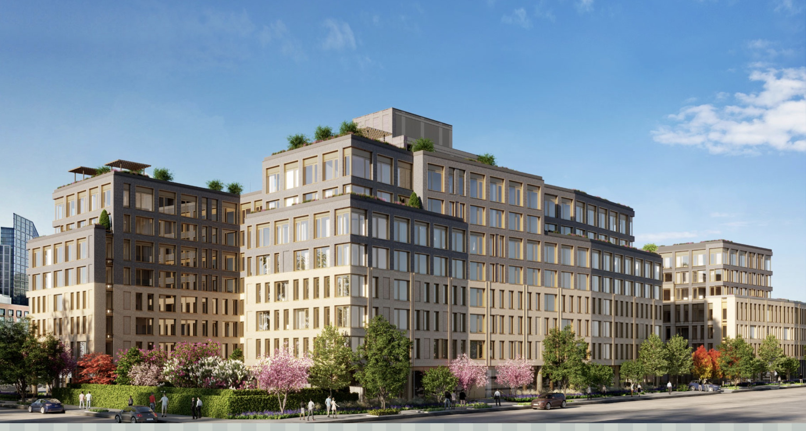

Priced Out in Greenpoint: Locals Locked Out of “Affordable” Housing
Though Greenpoint’s median income is high, some census tracts house longtime residents earning half of what’s needed to qualify for new “affordable” units.
By Zhenjia Zhang
Tuesday, May 19
When new affordable housing lotteries opened this spring at 237 McGuinness Blvd and 65 Dupont Street in Greenpoint, the offerings seemed like a godsend for New Yorkers desperate for a place to live. But for many long-term Greenpoint residents, the dream ended before the application even started.
To qualify for the least expensive “affordable” studio at McGuinness—renting for $1,757 a month—a single applicant must earn at least $65,109 annually, according to lottery requirements. At Dupont, the minimum income jumps even higher, around $69,000 for a comparable studio. Yet many longtime residents, especially those living in older rent-stabilized or public housing, report household incomes closer to $50,000—well below the threshold needed to apply.

A lottery housing in Greenpoint
This income gap creates a steep rent burden. For someone earning $50,000, the $1,757 monthly rent on the least expensive studio amounts to over 42% of their income—far above the commonly accepted affordability threshold of 30%. One-bedroom units, starting at $1,875 a month, require nearly $70,000 a year to qualify, while two-bedrooms at $2,232 push minimum incomes above $84,000—levels out of reach for many local families.
Greenpoint’s median household income was $111,492 in 2023, significantly above the citywide median of $76,577. But this figure masks deep economic disparities across the neighborhood. Certain census tracts, home to aging Polish immigrants, low-income Latino families, and longtime working-class residents, show incomes roughly half the amount required for these new “affordable” units.
“This isn’t for us,” said Elzbieta Kowalski, 62, who has lived in Greenpoint since emigrating from Poland in the 1980s. “I worked in a bakery my whole life, my husband drove trucks. We love it here. But these new buildings—these prices—they’re not for the people who made this neighborhood.”
The irony is stark. These buildings were developed under the city’s Inclusionary Housing program, which offers developers tax breaks and density bonuses in exchange for setting aside a portion of units as “affordable.” However, because affordability is defined by Area Median Income (AMI) — which includes high-income areas like Manhattan — the threshold is skewed for neighborhoods like Greenpoint, where many longtime residents earn far less than the citywide median.
At the highest income tier offered in these buildings—130% AMI—a two-bedroom rents for $3,661 a month and requires a minimum income of $125,520. Even 80% AMI units, ostensibly targeted toward low- to moderate-income households, are out of reach for many residents. The cheapest one-bedroom at this level rents for $1,875 a month, which represents 45% of income for someone earning $50,000.
“Housing affordability tied to AMI doesn’t reflect neighborhood-level incomes, and that creates a mismatch,” said Moses Gates, vice president for housing and neighborhood planning at the Regional Plan Association. “You end up with affordable units no one in the community can afford.”
Over the past two decades, Greenpoint has transformed from a quiet working-class neighborhood into one of Brooklyn’s most sought-after real estate markets. Median rents have doubled from about $2,300 in 2010 to more than $4,300 in 2025. While many older residents benefit from rent stabilization protections, younger generations and newcomers find themselves priced out.
“The rent’s so high I had to move to Ridgewood,” said Melissa Reyes, 28, who grew up in Greenpoint. “My mom still lives here, but I can’t find anything I can afford, even though I work full time.”
As applications close for the new affordable units, community members and advocates are calling on the city to revisit how affordability is defined—and to invest in deeper subsidies that reflect the incomes of real, local residents.
Otherwise, as one resident put it: “We’re building a neighborhood where the past has no future.”